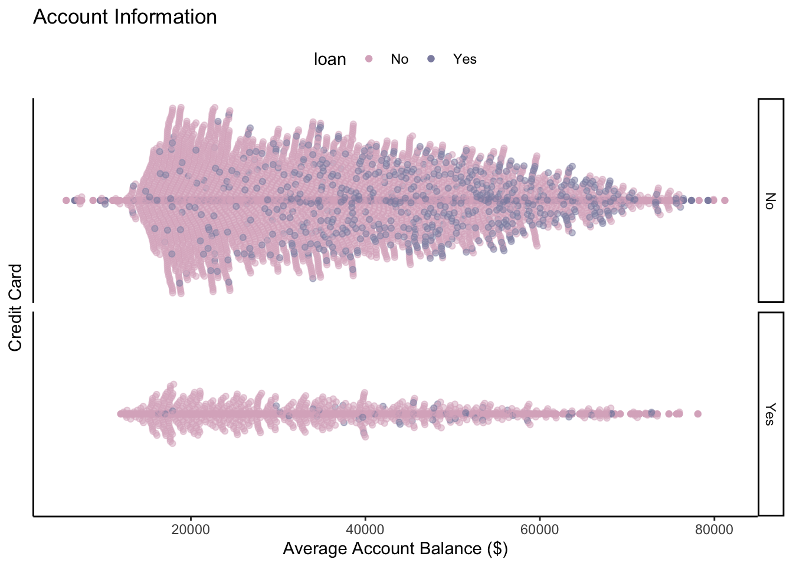

library(tidyr)
library(dplyr)
library(ggplot2)
library(ggbeeswarm)# Set working directory
setwd("~/Desktop/ANLY 503/ANLY503_Portfolio/")
accounts <- read.csv("data/accounts_analytical.csv", header = TRUE)
trans <- read.csv("data/transactions.csv", header = TRUE)# calculate average balance for each account
avg_balance <- trans %>%
group_by(account_id)%>%
summarise(avg_balance = round(mean(balance), digits=2))## `summarise()` ungrouping output (override with `.groups` argument)# select credit card info and loan info from accounts
acc_info <- accounts %>%
select(account_id, credit_cards, loan_amount)
# Fill NAs with 0
acc_info$credit_cards[is.na(acc_info$credit_cards)] <- 0
acc_info$loan_amount[is.na(acc_info$loan_amount)] <- 0
# Change from loan amount to loan T/F
acc_info <- acc_info %>%
mutate(loan = ifelse(loan_amount>0, "Yes", "No"))%>%
mutate(credit_card = ifelse(credit_cards>0, "Yes", "No"))%>%
select(account_id, credit_card, loan)
# merge all information by account_id
data <- merge(acc_info, avg_balance, by = "account_id")Since we want to show three kinds of information on one account, I think it will be best if we can use a scatter plot, which can show each account as a point. I also chose a beeswarm geom layer in order to jitter the points and approximately show the distribution of the average balance of the points. The plot is faceted by credit card information (yes or no), and the color is dependent on the loan information (yes or no).
g <- ggplot(data, aes(x = avg_balance,y=0, col = loan, fill = loan))+
geom_point()+
geom_beeswarm(alpha = 0.5, groupOnX = FALSE)+
facet_grid(credit_card~.)+
scale_color_manual(values = c("#dbb2c6", "#8f8fb0"))+
theme_classic()+
theme(axis.text.y = element_blank(),
axis.ticks.y = element_blank(),
legend.position = "top")+
xlab("Average Account Balance ($)")+
ylab("Credit Card")+
ggtitle("Account Information")
g
From the above plot, we can see that most of the accounts in our dataset does not have a credit card, and at the same time most of the accounts that have a loan does not have a credit card. About approx. 50% of the accounts have a balance of less than $40k, and from the plot it seems that people have a loan has a relatively larger account balance and does not have have a credit card.